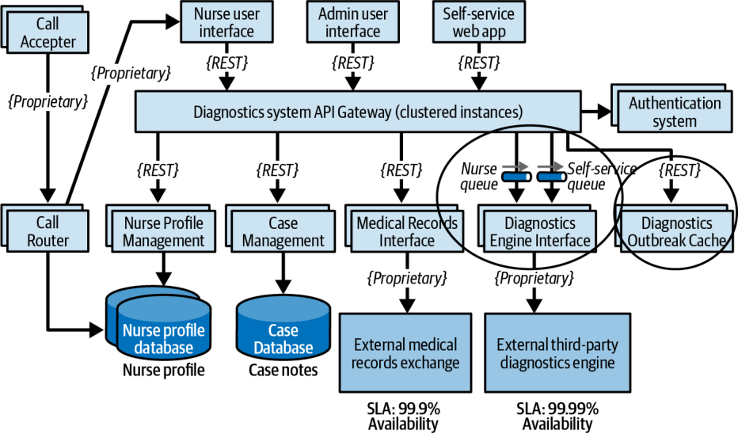
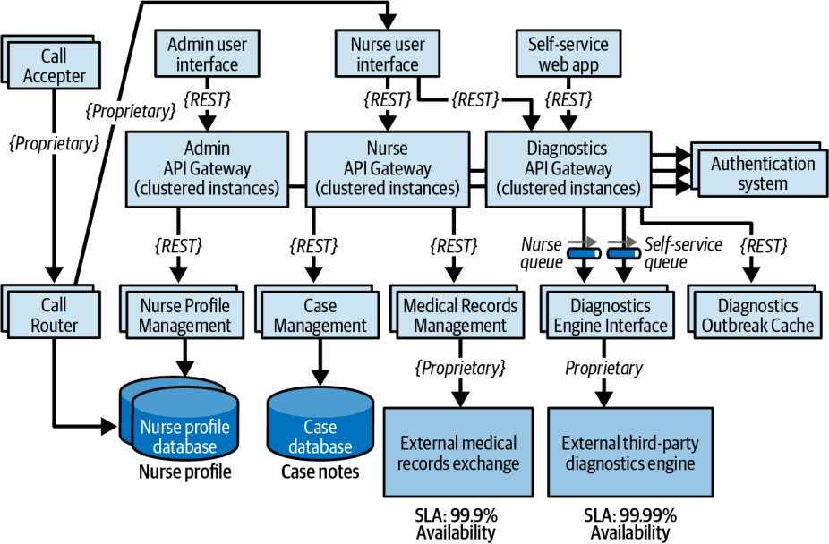

دومین تمرین طوفان ریسک بر کشسانی متمرکز است؛ یعنی جهشهای (spikes) بار کاربران (که مقیاسپذیریِ متغیر (variable scalability) نیز نامیده میشود). هرچند تنها ۲۵۰ پرستار وجود دارد (یعنی بیش از ۲۵۰ پرستار به Diagnostics Engine دسترسی نخواهند داشت)، بخش سلفسرویسِ سیستم نیز میتواند به Diagnostics Engine دسترسی داشته باشد و همین امر تعداد درخواستها به واسط Diagnostics Engine را بهطور چشمگیری افزایش میدهد. شرکتکنندگان طوفان ریسک نگران فصل آنفلوانزا و شیوع کووید هستند که بار پیشبینیشدهٔ سیستم را بهطور چشمگیری افزایش خواهد داد.
شرکتکنندگان به اتفاق آرا واسط Diagnostics Engine را ریسک بالا (۹) تشخیص میدهند. از آنجا که این واسط تنها میتواند ۵۰۰ درخواست در ثانیه را پاسخ دهد، بهدرستی محاسبه میکنند که ریسک بالایی وجود دارد که نتواند پابهپای توان عملیاتیِ پیشبینیشده پیش برود؛ بهویژه با REST بهعنوان پروتکل واسط آن.
تیم به این نتیجه رسید که یکی از راههای کاهش این ریسک، استفاده از صفهای ناهمگام (پیامرسانی) برای ارتباط میان دروازهٔ API و واسط Diagnostics Engine است. این کار در صورت انباشته شدنِ فراخوانیها به Diagnostics Engine یک نقطهٔ فشار معکوس فراهم میکند. هرچند این شیوهٔ خوبی است، هنوز همهٔ ریسک را کاملاً کاهش نمیدهد: پرستاران و بیمارانِ سلفسرویس همچنان مدت زیادی منتظر پاسخ Diagnostics Engine خواهند ماند و به احتمال زیاد مهلت زمانیِ درخواستهایشان منقضی خواهد شد.
شرکتکنندگان تصمیم میگیرند از الگویی به نام الگوی Ambulance (آمبولانس) استفاده کنند تا این درخواستها را با به کار بردنِ دو کانال پیام به جای یکی از هم جدا کنند. این کار به سیستم امکان میدهد درخواستهای پرستاران را بر درخواستهای سلفسرویس اولویت دهد. این راهحل به کاهش ریسک کمک میکند، اما همچنان مشکل زمانهای انتظار را برطرف نمیکند. پس از گفتوگوی بیشتر، گروه تصمیم میگیرد فراخوانیهای مرتبط با شیوع بیماری به Diagnostics Engine را کاهش دهد؛ به این صورت که آن پرسشهای تشخیصیِ مشخص را کش میکند تا هرگز به واسط Diagnostics Engine نرسند.
افزون بر ایجاد دو کانال پیامرسانی (یکی برای پرستاران و یکی برای بیماران سلفسرویس)، تیم سرویس تازهای به نام Diagnostics Outbreak Cache Server ایجاد میکند که همهٔ درخواستهای مربوط به یک شیوع مشخص یا پرسشهای مرتبط با آنفلوانزا را پاسخ میدهد (شکل ۲۲-۱۱). این معماری تازه تعداد فراخوانیها به موتور تشخیص را کاهش میدهد و امکان پاسخ به درخواستهای همزمانِ بیشتری را دربارهٔ علائم دیگر فراهم میکند. بدون تلاش طوفان ریسک، ممکن بود این ریسک تا فرا رسیدنِ فصل آنفلوانزا شناسایی نشود.

معمار که از این موفقیتها دلگرم شده، تصمیم میگیرد جلسهٔ پایانیِ طوفان ریسک را با تمرکز بر یکی دیگر از ویژگیهای حیاتیِ این سیستم، یعنی امنیت، تسهیل کند. به دلیل الزامات قانونیِ (regulatory requirements) HIPAA، Medical Records Interface باید تنها به پرستاران اجازهٔ دسترسی به سوابق پزشکی بیماران را بدهد. معمار بر این باور است که بررسیهای احراز هویت (authentication) و مجوزدهی (authorization) در دروازهٔ API این ریسک را خنثی میکند، اما کنجکاو است که آیا شرکتکنندگان ریسک امنیتیِ دیگری خواهند یافت یا نه.
همهٔ شرکتکنندگان دروازهٔ API سیستم تشخیص را ریسک امنیتیِ بالا (۶) تشخیص میدهند. آنها به اثر بالای دسترسی کارکنان اداری یا بیماران سلفسرویس به سوابق پزشکی (۳) اشاره میکنند، اما احتمال وقوع را متوسط (۲) ارزیابی میکنند. هرچند بررسیهای امنیتی برای هر فراخوانی API کمک میکنند، همهٔ فراخوانیها (سلفسرویس، اداری و پرستاران) همچنان از یک دروازهٔ API واحد میگذرند. آنها سرانجام تسهیلگر را، که در ابتدا این ریسک را پایین (۲) ارزیابی کرده بود، قانع میکنند که ریسک در واقع بالاست و باید کاهش یابد.
همه توافق دارند که داشتنِ دروازههای API جداگانه برای هر نوع کاربر (کارکنان اداری، کاربران سلفسرویس و پرستاران) از رسیدنِ هرگونه فراخوانیِ غیرپرستار به Medical Records Interface جلوگیری میکند. نسخهٔ نهایی معماریِ معمار در شکل ۲۲-۱۲ نشان داده شده است.

این مثال توان طوفان ریسک را نشان میدهد. معماران، توسعهدهندگان و ذینفعان کلیدی با هم همکاری میکنند، حیاتیترین ویژگیهای معماری برای موفقیت سیستم را در نظر میگیرند و نواحی ریسکی را شناسایی میکنند که در غیر این صورت از چشم پنهان میماندند.
معماری اولیه (شکل ۲۲-۸) پس از طوفان ریسک (شکل ۲۲-۱۲) بهطور چشمگیری تغییر کرده است؛ تغییراتی که نگرانیهای مربوط به در دسترسبودن، کشسانی و امنیت را برطرف میکنند و این معماری را اثربخشتر و موفقیت آن را محتملتر میسازند.
طوفان ریسک فرایندی یکباره نیست. این فرایند در سراسر چرخهٔ عمر سیستم ادامه مییابد، زیرا تیمها میکوشند نواحی ریسک را پیش از آنکه در محیط تولید آشکار شوند شناسایی و کاهش دهند. اینکه یک سازمان هر چند وقت یک بار باید جلسههای طوفان ریسک برگزار کند به عوامل بسیاری بستگی دارد، از جمله بسامد تغییرات، هرگونه تلاش برای بازآرایی معماری و توسعهٔ تدریجیِ معماری. معمول است که پس از افزودن یک قابلیت مهم یا در پایان هر تکرار، طوفان ریسک را بر ابعاد مشخصی انجام دهند تا اطمینان حاصل شود که معماری درست است و نیازهای کسبوکار را برآورده خواهد کرد.
| واژهٔ انگلیسی | معادل مصوب/بهکاررفته در این بخش |
|---|---|
| Spike (load) | جهش |
| Variable Scalability | مقیاسپذیری متغیر |
| Ambulance Pattern | الگوی Ambulance (آمبولانس) |
| Regulatory Requirements | الزامات قانونی |
| Authentication | احراز هویت |
| Authorization | مجوزدهی |